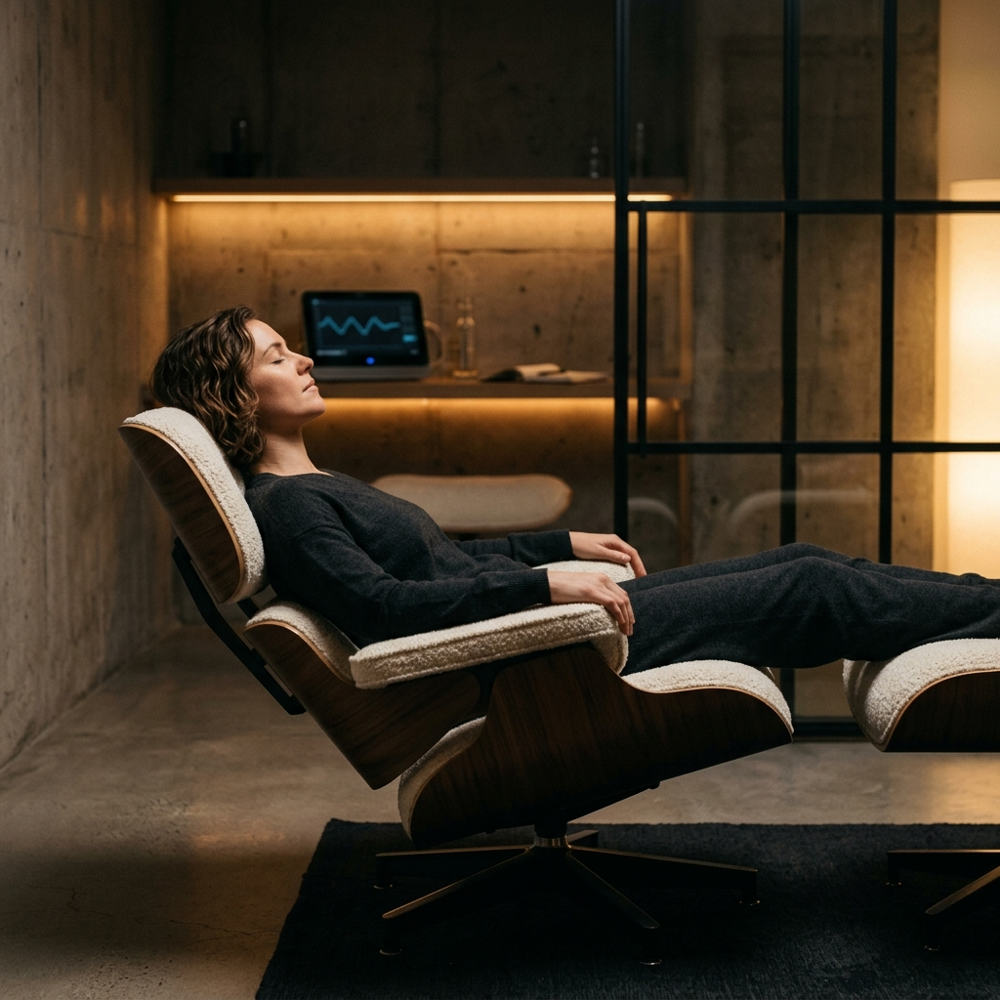
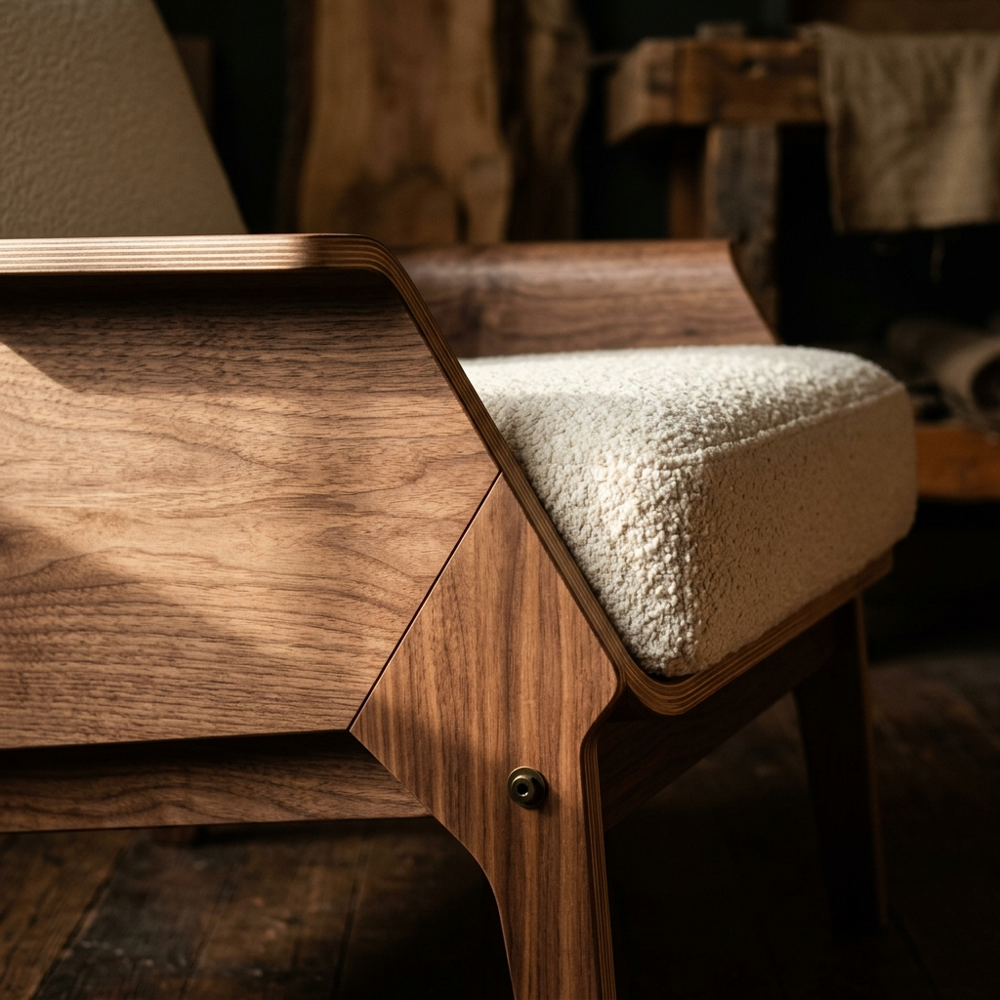
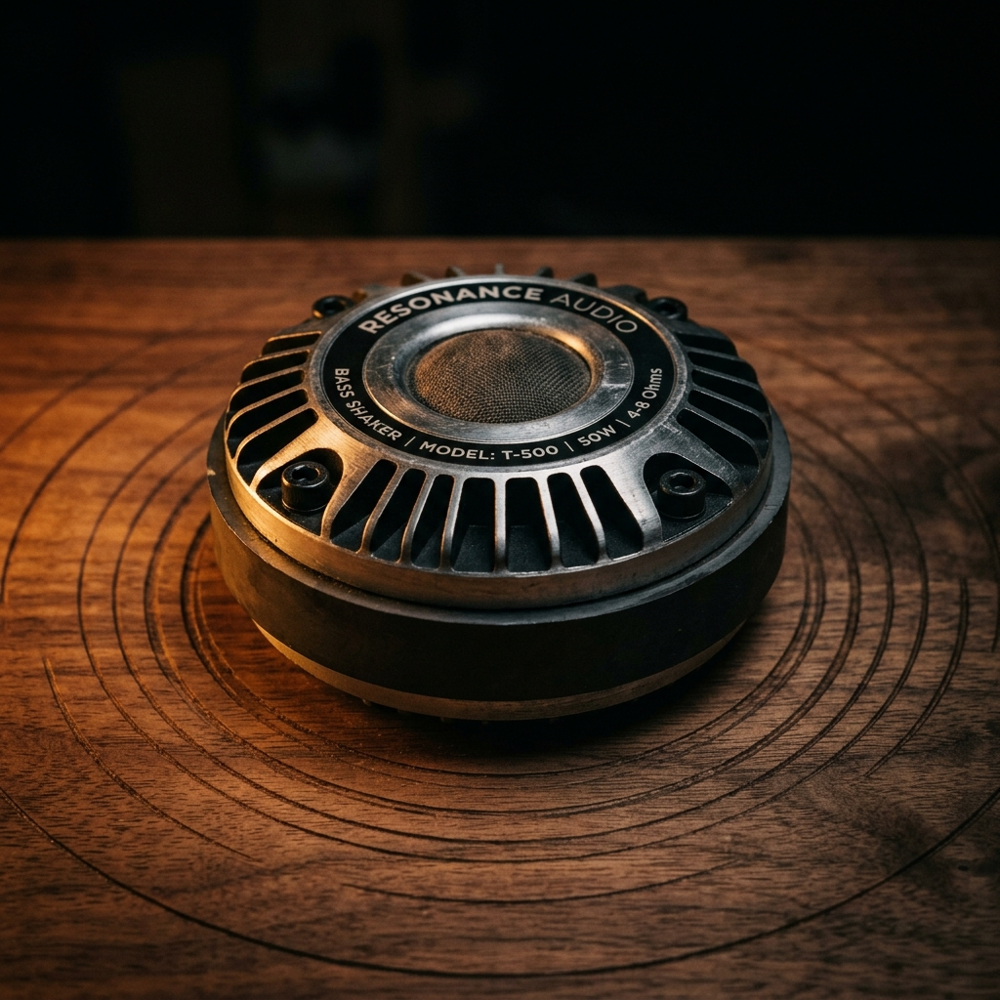
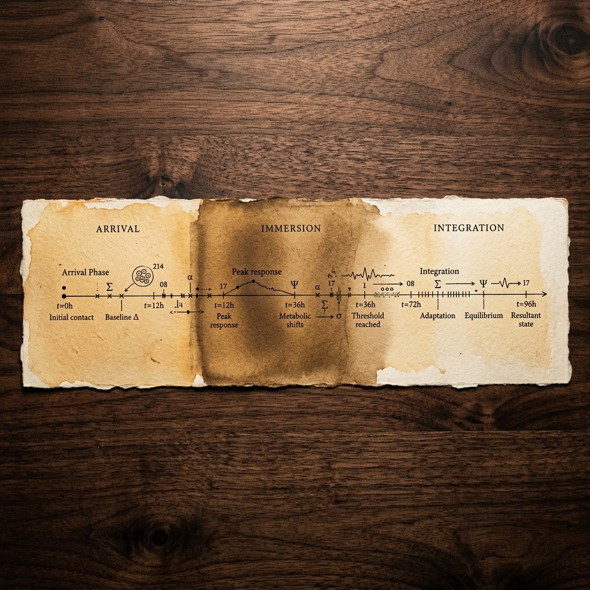
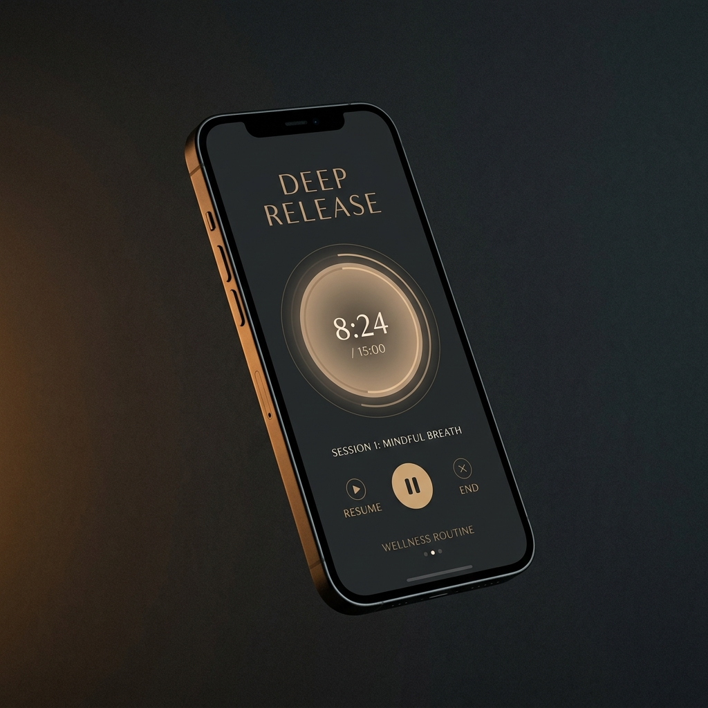

Guided respiratory protocols that reset your autonomic nervous system.
Controlled breathwork protocols show significant heart rate variability improvement within 8 weeks of consistent practice.
Guided breathing patterns produce measurable alpha wave amplification, associated with calm focus and creative flow states.
Extended exhale protocols demonstrate clinically significant cortisol reduction after single 12-minute sessions.
Precision-tuned frequencies that synchronize brainwave activity.
Precision-tuned sound frequencies reduced anxiety levels by 65% in controlled trials, outperforming every other stimulus tested.
AI-personalized sound therapy reduced cognitive anxiety by 21% in a single 24-minute session — four times more effective than standard mindfulness.
Daily 20-minute acoustic stimulation sessions produced measurable alpha brainwave entrainment and reduced depression and stress scores within 21 days.
Haptic resonance that releases stored tension at the cellular level.
Low-frequency vibration applied to trigger points produced a 73% increase in pressure pain threshold over 10 sessions. The tissue releases what it's been holding.
Vibration massage accelerated muscular strength recovery three times faster than passive rest. The body rebuilds when you give it the right signal.
Vibration-assisted massage reduced muscle pain symptoms by up to 50%. Stored tension doesn't resolve on its own — it needs resonance.
Your nervous system has operating modes you've never consciously accessed. Clinical neuroscience confirms that specific meditative states produce measurable changes in brainwave coherence — shifting the brain from scattered beta into synchronized alpha and theta patterns associated with heightened clarity, deep focus, and accelerated recovery.
The first step isn't doing. It's arriving.

In Sanskrit, asana means "seat" — the foundational posture where effort dissolves and the body can fully surrender. The QUANTASANA chair is engineered to that principle. A 130° recline positions your spine at the precise angle where muscular tension releases, diaphragmatic breathing deepens naturally, and the nervous system shifts from sympathetic activation to parasympathetic recovery.
Zero-gravity walnut and boucle. No two are identical.

Every session is built on a precisely engineered audio layer. Binaural frequency pairs calibrated to specific brainwave targets — 4Hz theta for deep meditation, 10Hz alpha for creative focus, 40Hz gamma for cognitive sharpening. The spatial audio field wraps around you, creating an immersive sound environment that your brain can't ignore. This isn't background music. It's acoustic architecture.
Frequencies your brain was built to follow.
Embedded beneath each cushion zone, tactile transducers convert the session's sound frequencies into physical vibration you feel through your entire body. The vibration is frequency-matched to the audio — when a 40Hz tone plays, you feel 40Hz in your chest. Four independent zones deliver targeted resonance so the right frequency reaches the right tissue at the right intensity.
You don't just hear the session. You feel it.

A QUANTASANA session isn't random relaxation — it's a sequenced protocol. Each session moves through distinct phases: arrival (breath regulation, nervous system downshift), immersion (frequency entrainment, deep vibration), integration (gradual return, cognitive reset). The timing of each phase is calibrated to your body's neurological response curve. Twenty minutes, precisely structured.
Not a playlist. A prescription.

A standalone app orchestrates every session — guiding your breath timing, adjusting sound frequencies in real time, and calibrating vibration intensity across all four body zones. Choose from guided protocols designed for focus, recovery, sleep, or deep release. Track your sessions, monitor your progress, and build a practice that adapts to your nervous system over time.
The conductor behind the experience.

Quantasana exists because we believe the body already has everything it needs to heal. It just needs the right environment — the right frequency, the right posture, the right signal at the right time.
This system was designed for the person who takes their recovery as seriously as their performance. Whether that means a private room or your own living room, the practice adapts to where you are.
We're two builders — one who writes the software, one who builds the furniture — and we built this for ourselves first. Then we realized it was bigger than us.
A connected practice — track your sessions, follow other practitioners, and watch your nervous system data evolve over weeks and months.
Purpose-built spaces — intimate rooms designed for 20-minute protocols. A new category of environment, built around the chair.
A growing protocol — every session generates data. Every data point refines the system. The practice gets smarter the more people use it.
We're opening access slowly and intentionally. Join the first wave.
THE SYSTEM IS READY
FOUNDERS EDITION — NOW ACCEPTING RESERVATIONS